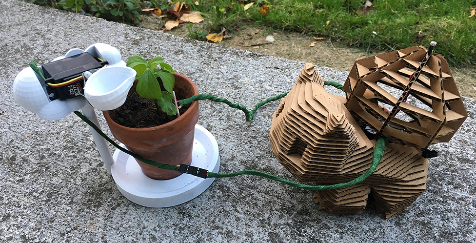
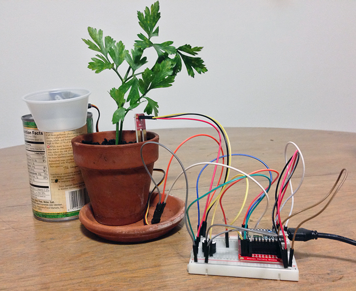
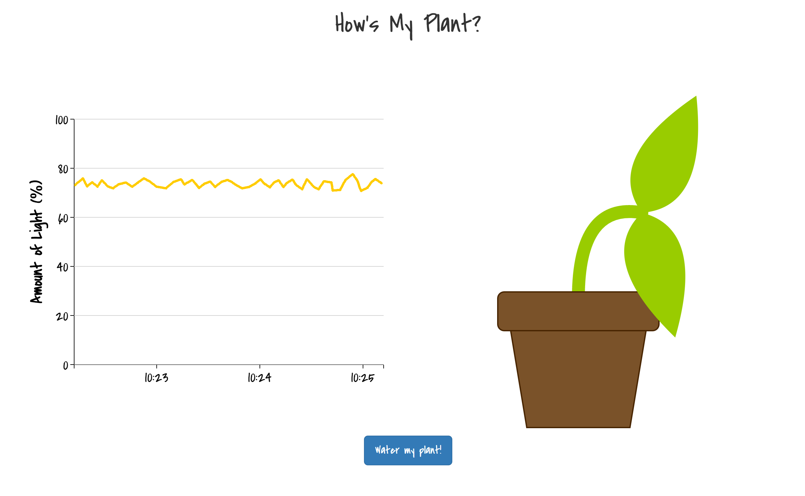

IoT Device Prototype
Software
Photon Code · Node.js · d3 · Paper.js · TinkerCAD · 123D Design · 123D Make
Hardware & Tools
Photon · 3D printer · laser cutter
Skills Used
circuit building · prototyping · 3D modeling
This was a multi-stage project for exploring IoT interactions. Ultimately I created a semi-automated plant watering device.
I first designed a circuit consisting of a Photon microcontroller and sensors for detecting the moisture level in soil and the amount of light a plant was receiving. A motor was also connected to the circuit, which could be activated to give water to the plant via tipping a water-filled container. The Photon provided a wi-fi connection for passing the sensor information to a web application I later developed.
The web app displays a graph for the current light conditions and a plant graphic for relaying the amount of water the plant currently has: the more droopy the plant, the less water. By pressing a button in the web app, the user could then turn on the circuit motor and remotely water their plant.
Eventually I designed a container for the circuit in the shape of the grass-type pokemon, Bulbasaur. The model was modified from a previously existing design on Thingiverse using two 3D modeling programs (TinkerCAD and 123D Design). Then with the help of 123D Make, I turned the model into multiple layers to be laser cut, and then assembled the container. The water container was redesigned in the shape of the cloud, to evoke the idea of a rain cloud watering the plant. This structure was also created in 123D Design, and then 3D printed.